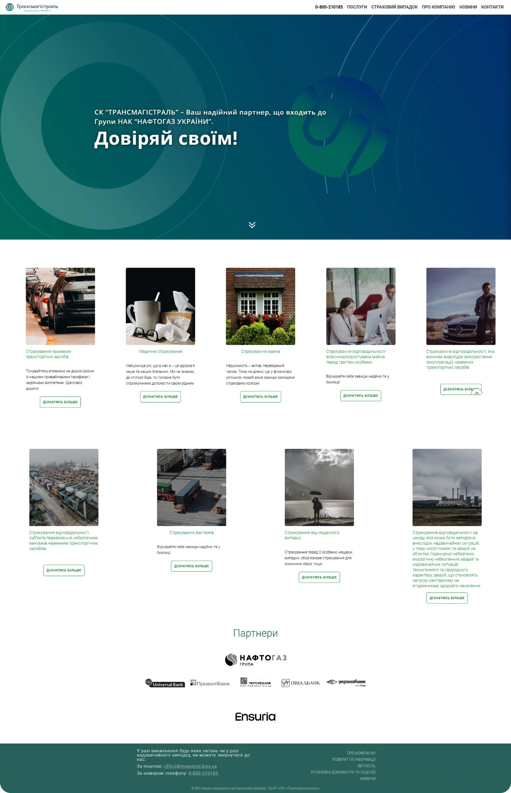
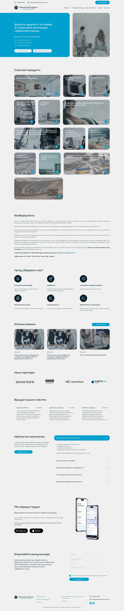
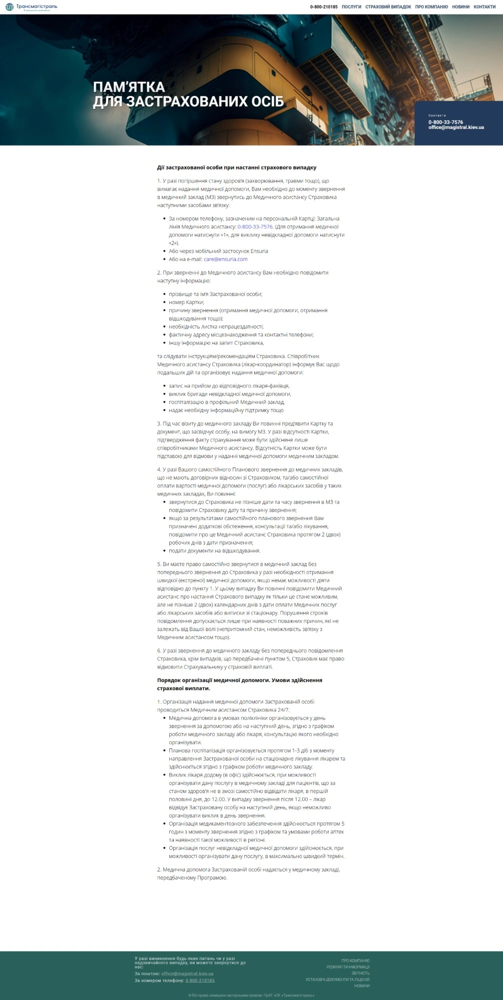
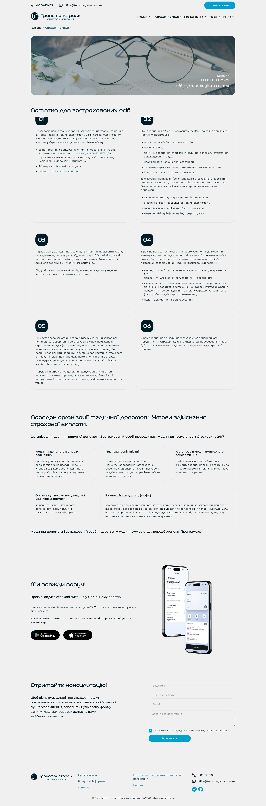
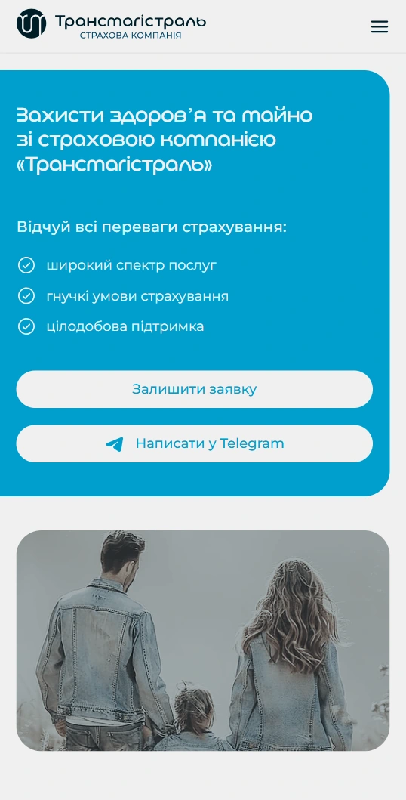
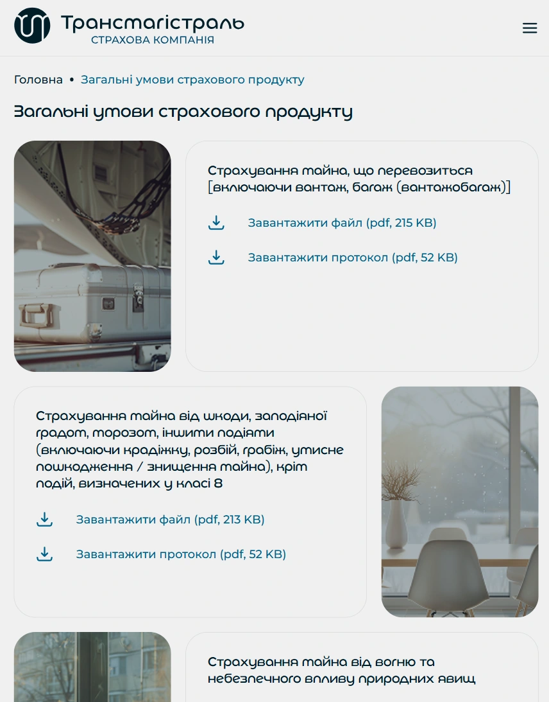

Трансмагістраль: новий сайт страхової компанії з групи НафтогазTransmagistral: a new website for an insurer in the Naftogaz group
Компанія пройшла ребрендинг, а сайт залишився старим: застарілий вигляд, незручна навігація, документи важко знайти. Ми зробили повний редизайн: нова структура, UX, дизайн за новою айдентикою, верстка і WordPress.The company went through a rebrand, but the website stayed old: dated look, awkward navigation, hard-to-find documents. We did a full redesign: new structure, UX, design in the new identity, front-end and WordPress.
Головна сторінкаHomepage


Пам'ятка для застрахованих осібMemo for insured persons


↕ Гортайте всередині вікон↕ Scroll inside the windows
Документи і продукти зручно відкривати з телефонаDocuments and products are easy to open on a phone
Умови кожного страхового продукту зібрані в картках з фото і кнопками завантаження PDF. Раніше їх доводилось шукати по сайту.Terms for every insurance product sit in cards with a photo and PDF download buttons. Before, you had to hunt for them across the site.


ЗадачаThe brief
СК «Трансмагістраль» працює з 2003 року, має 14 класів страхування і входить до групи НАК «Нафтогаз України». Компанія оновила логотип і фірмовий стиль з іншим дизайнером, і старий сайт перестав відповідати бренду.Transmagistral has been operating since 2003, covers 14 insurance classes and is part of the Naftogaz of Ukraine group. The company updated its logo and identity with another designer, and the old site no longer matched the brand.
Потрібен був сайт, який виглядає на рівні великого бізнесу, а клієнт за кілька кліків знаходить свій продукт, документи і контакти.They needed a site that looks enterprise-grade, where a customer finds their product, documents and contacts in a few clicks.
Що зробилиWhat we did
- 01Нова структура і UX.New structure and UX. Переробили меню і логіку сторінок: продукти, страховий випадок, про компанію, новини, контакти.Rebuilt the menu and page logic: products, insurance claims, about, news, contacts.
- 02Дизайн за новою айдентикою.Design in the new identity. На основі нового логотипу і стилю розробили дизайн усіх сторінок і мобільної версії.Designed every page and the mobile version based on the new logo and brand style.
- 03Каталог страхових продуктів.Insurance product catalogue. Усі продукти у вигляді карток з фото, кожна веде на свою сторінку з умовами і документами.Every product as a photo card, each leading to its own page with terms and documents.
- 04Блоки довіри і заявки.Trust and lead blocks. Партнери, відгуки клієнтів, переваги компанії, FAQ, новини, блок мобільного застосунку і форма консультації.Partners, client reviews, company benefits, FAQ, news, a mobile app block and a consultation form.
- 05Верстка і WordPress.Front-end and WordPress. Зверстали дизайн і натягнули на WordPress, щоб команда клієнта сама оновлювала новини, документи і продукти.Built the front-end and moved it onto WordPress so the client's team can update news, documents and products themselves.
РезультатResult
Сайт виглядає як компанія з групи Нафтогаз, а не як шаблон десятирічної давниниThe site now looks like a Naftogaz group company, not a decade-old template
Нова айдентика, зрозуміла структура і всі документи в один клік. Контент команда клієнта оновлює сама, без розробника.New identity, a clear structure and every document one click away. The client's team updates content on their own, without a developer.